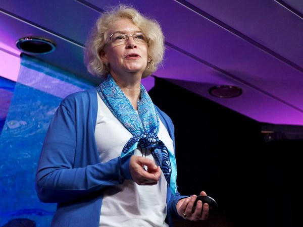

Loading…
Kristina Gjerde
Making law on the high seas
Previous talk
Play
Pause
Next talk
Volume
0:00
/
0:00
Subtitles
Show talks
Full screen
Open on TED.com
Exit full screen
Mute
Mute

15:46
Kristina Gjerde: Making law on the high seas
Turn subtitles off
Greek
English
Italian
Arabic
Portuguese, Brazilian
Indonesian
Spanish
Russian
Dutch
Portuguese
Chinese, Traditional
Turkish
Chinese, Simplified
Romanian
Polish
French
Bulgarian
German
Japanese
Hebrew
Serbian
Korean
Vietnamese
Hungarian
Get personal recommendations and the newest TED ideas sent straight to your inbox
Sign up now
Rewatch